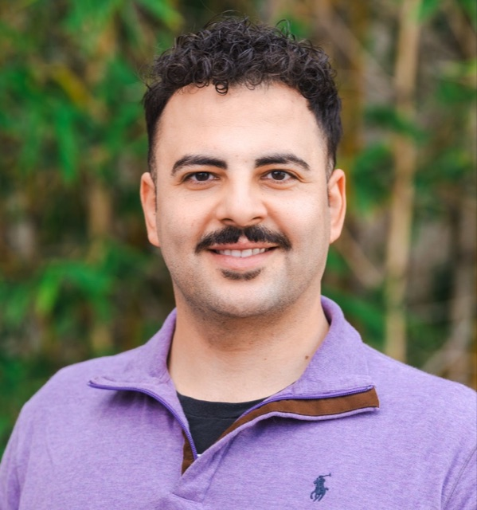

Jaber Daneshamooz
PhD student in Computer Science at UC Santa Barbara, advised by Arpit Gupta in the Systems and Networking Lab.
Research
I build systems that generate realistic, controllable data for networking machine learning, so that models trained in the lab still work in the field.
NetReplica (NTC-Reloaded 2026) recreates challenging network conditions by separating a bottleneck link's capacity and queuing from the competing traffic that crosses it; training a video-streaming (ABR) model on this data cut its prediction error by up to 47%. NetGent (NeurIPS ML4Sys 2025) uses AI agents to automate real application workflows across more than 50 applications. Pramana (HotNets 2026) ties them together: a researcher describes an experiment in natural language and Pramana runs it and produces the data.
I also work on foundation models for network traffic (netFound, NetBurst) and on teaching networking in the age of AI. I have mentored 13 students and founded NetSplit, a startup applying this work to internet management in shared environments.
News
- Two papers accepted to NTC-Reloaded 2026, co-located with ACM CoNEXT: NetReplica and "Rethinking Network Foundation Models."
- Pramana accepted to ACM HotNets 2026.
- "Facilitating Experiential Learning in Networking Education" accepted to SIGCSE TS 2027.
- NetGent at NeurIPS ML4Sys; two papers at ACM IMC 2025.
Publications
- Pramana: A Composable, Domain-Specific Backend for Empirical Networking Research ACM HotNets 2026 · arXiv · DOI
- NetReplica: A Bottleneck-Regime Substrate for Reproducible Network Data Generation NTC-Reloaded 2026, co-located with ACM CoNEXT (short paper) · DOI · long version (arXiv)
- Rethinking Network Foundation Models: From Bigger Models to Better Data NTC-Reloaded 2026 · DOI
- A First-Principles Framework for Networking Education SIGCOMM Education Workshop 2026 (A4NE)
- Facilitating Experiential Learning in Networking Education ACM SIGCSE TS 2027 · program page
- NetGent: Agent-Based Automation of Network Application Workflows NeurIPS 2025 Workshop on ML for Systems
- NetBurst: Event-Centric Forecasting of Bursty, Intermittent Time Series arXiv 2025 · arXiv:2510.22397
- netFound: Principled Design for Network Foundation Models arXiv 2025 · arXiv:2310.17025
- Robust and Extensible Measurement of Broadband Plans with BQT+ arXiv 2026 · arXiv:2602.16969
- Enabling Data-Driven Policymaking Using Broadband-Plan Querying Tool (BQT+) ACM IMC 2025 PRIME Workshop
- Uncovering Lesser-Studied RTC Applications using RTP ACM IMC 2025, pp. 1044–1045
- Seagull: Privacy-Preserving Network Verification System arXiv 2024 · arXiv:2402.08956
Full list with all co-authors: Google Scholar and the CV.
Selected honors
- Finalist, UCSB New Venture Competition (NetSplit)
- Winner, CNSI Global Entrepreneur in Residence
- NSF I-Corps ZAP and BOOM; invited to national I-Corps
- Second place, CSAW 2023 logic-locking competition (UCSB news)
- Ranked first in Information Technology among B.Sc. students, Isfahan University of Technology